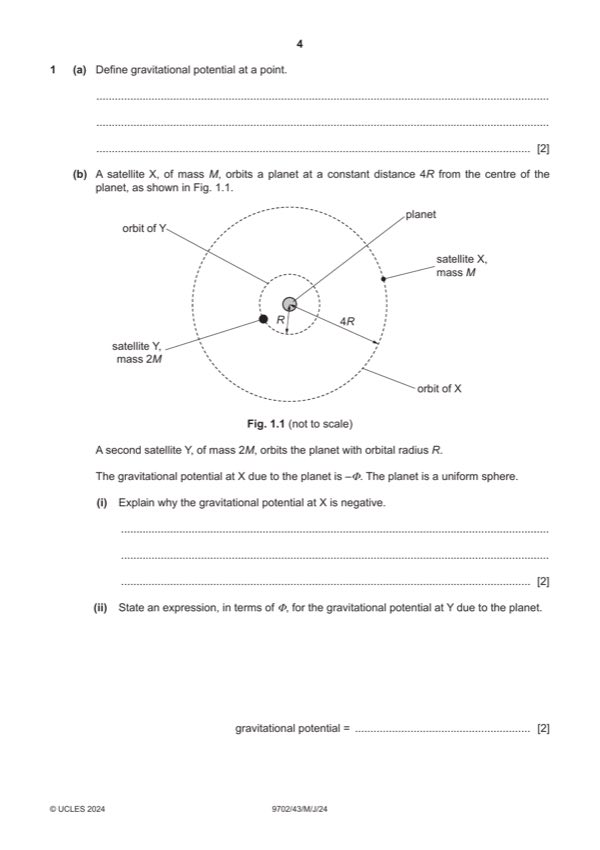

Question 1

Original paper page 4
Part 1(a) — solution
- [B1] Obtain/use: work done per unit mass
- [B1] Obtain/use: work done moving mass from infinity (to the point)
Mark points
- [B1] Obtain/use: work done per unit mass
- [B1] Obtain/use: work done moving mass from infinity (to the point)
Part 1(b)(i) — solution
- [B1] Obtain/use: potential is zero at infinity
- [B1] Obtain/use: work is done by (two) masses in moving them closer together
Mark points
- [B1] Obtain/use: potential is zero at infinity
- [B1] Obtain/use: work is done by (two) masses in moving them closer together
Part 1(b)(ii) — solution
- [B1] Obtain/use: magnitude of potential shown as 4
- [B1] Obtain/use: potential negative and shown as a multiple of – [potential = –4 if fully correct]
Mark points
- [B1] Obtain/use: magnitude of potential shown as 4
- [B1] Obtain/use: potential negative and shown as a multiple of – [potential = –4 if fully correct]
Part 1(b)(iii) — solution
- [A1] Obtain/use: field strength at X: / 4R
- [A1] Obtain/use: field strength at Y: 4 / R
- [A1] Obtain/use: potential energy at X: –M
- [A1] Obtain/use: potential energy at Y: –8M
Mark points
- [A1] Obtain/use: field strength at X: / 4R
- [A1] Obtain/use: field strength at Y: 4 / R
- [A1] Obtain/use: potential energy at X: –M
- [A1] Obtain/use: potential energy at Y: –8M